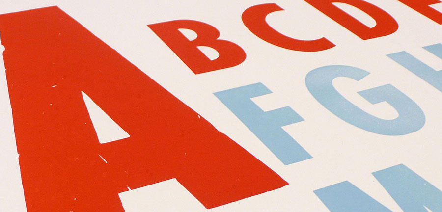

The Japanese Alphabets…All Four Of Them
“When I was having that alphabet soup, I never thought that it would pay off.” - Vanna White

There are going to be a few people out there (most likely not you) who are going to immediately say “the Japanese don’t use ‘alphabets,’ they use ‘syllabaries,’ duh!”
Before you do that, let me talk about something really quick. This also gives me a great opportunity to talk about something interesting about learning and education (as well as how TextFugu is different).
“The Curse Of Knowledge” is when someone knows too much about a subject. It causes teachers to make too many assumptions about what people know (and don’t know), which then causes them to be abstract and confusing. Here’s an example.
When you’re a kid, you learn that electrons circle the nucleus just like planets circle the sun. The thing is, they don’t do that, they exist around nuclei in “probability clouds.” Now, don’t ask me what that means, but the point I’m trying to make is that sometimes you have to teach people things that are technically incorrect in order to get them closer to the accurate information. Imagine telling little kids about probability clouds. They wouldn’t understand a thing, and would come away frustrated and confused.
That being said, I’m using the word “alphabets” to describe the syllabaries that make up the Japanese language. It’s so important to use and associate new information with things you already know, which is something you’ll notice throughout all parts of TextFugu. In this case, I’m (assuming) you are like most other people and don’t know what syllabaries are. So, instead of using something abstract, I’m using something you already know, and that’s going to give you progress (rather than leaving you in the dust).
Speaking of progress, it’s time for you to learn about all the Japanese syllabaries alphabets… all four of them. Yep, there’s a lot, but it’s not quite as bad as you think. In fact…
Here’s the good news: You already know one of them (or you’re only pretending to read this text)
Here’s the bad news: You don’t know the other three, and they will take some time and effort (of course, you already know that. Why else would you still be here?).
The first step is to be able to identify the four. You don’t have to know them all yet, I just want you to be able to recognize them. Once you can do that, we’ll start learning our first one. Read on to find out more!